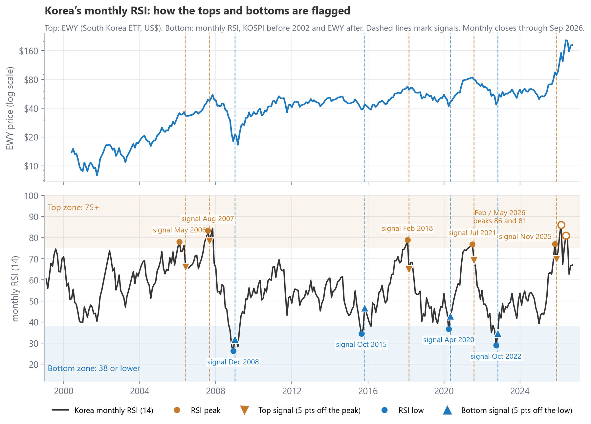
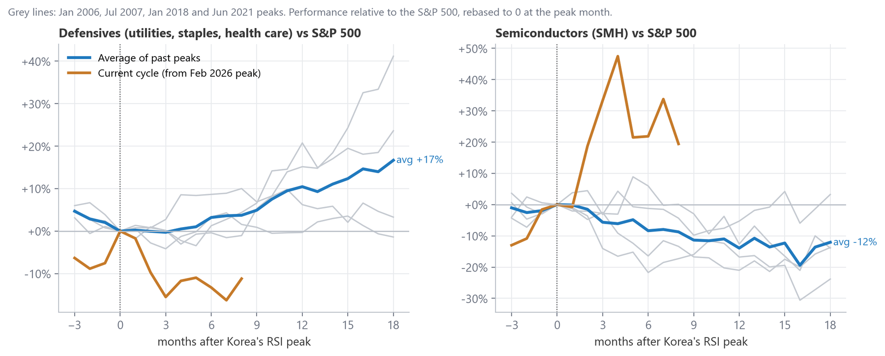
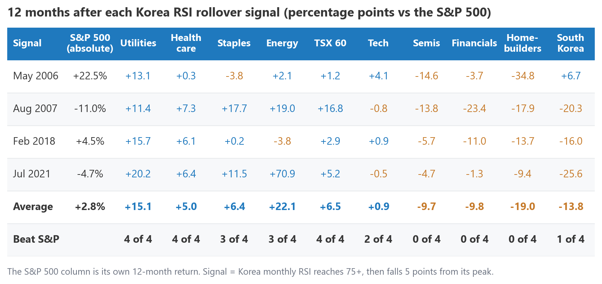
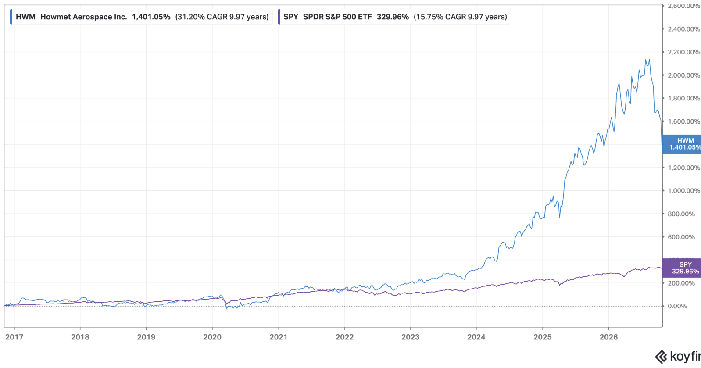
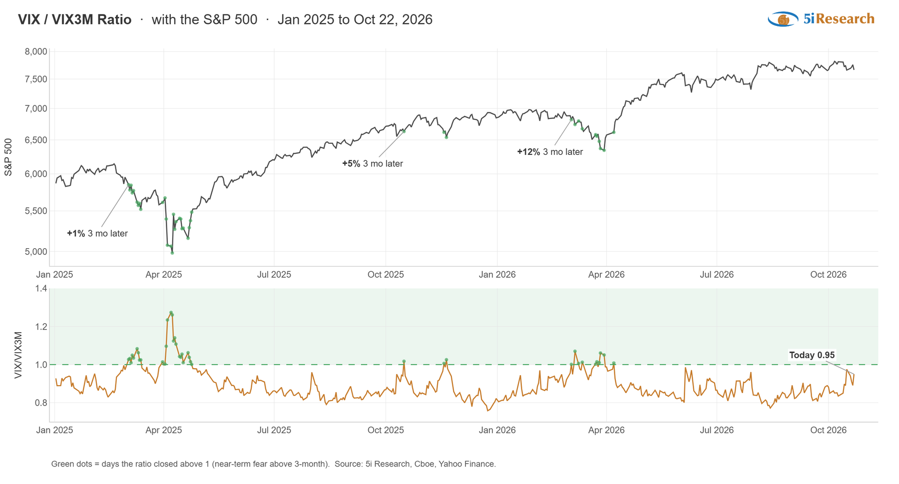

South Korea is one of the most cyclical stock markets in the world. It is export-driven and dominated by two memory chip makers, Samsung Electronics and SK Hynix, so it tends to feel changes in the global cycle before other markets do. In this market musings, we looked at what has happened to US sectors and stocks after Korea’s market became extremely overbought and rolled over, as well as the memory chip cycle fueling Korea’s latest run.
We used the Relative Strength Index (RSI) on Korea’s monthly closes (the KOSPI before 2002 and the iShares MSCI South Korea ETF, EWY, after). The RSI indicator compares the size of up months to down months over the past 14 months on a scale of 0 to 100, where readings above 70 are generally considered overbought and below 30 oversold. We used simple rules so that each signal could be identified at the time, not with hindsight:
In Figure 1, we show that since 1999, this analysis produced five top signals and four bottom signals. The top panel demonstrates the KOSPI index’s price, while the bottom panel is its monthly RSI indicator.

Korea has been a late-cycle warning rather than a market timer. Its RSI peaks came zero to eight months before S&P 500 highs in 2007, 2018 and 2021-22, but the 2006 signal was 20 months early, and the S&P 500 averaged a modest 2.8% over the following 12 months. The more consistent effect has been sector rotation. In Figure 2, we line up each cycle on the month Korea’s RSI peaked. On average, defensive sectors drifted sideways relative to the S&P 500 for six months, then pulled ahead to finish 17% ahead after 18 months, while semiconductors lagged by 12%.

Figure 3 shows the results signal by signal. Utilities, health care and the TSX 60 beat the S&P 500 after all four completed signals, while semiconductors, financials and homebuilders lagged every time historically.

The current cycle, shown in orange in Figure 2, has not followed the script so far. Eight months after Korea’s February peak, defensives are about 11% behind the S&P 500 and semiconductors are about 19% ahead, as the AI trade has held its leadership.
HWM operates as a global producer of advanced engineered metal components for aerospace and transportation. The company’s portfolio of products includes highly engineered components such as jet engine parts, aerospace fasteners, titanium airframe structures, and forged aluminum truck wheels. The company produces proprietary, mission-critical metallurgical components that allow modern commercial and defense aircraft to fly. The company benefits from a structurally oligopolistic market with high barriers to entry, allowing the company to adjust prices over the years with limited risks from new entrants. In addition, most aerospace operators have experienced tailwinds in terms of pricing power in recent years, driven by global supply chain constraints caused by the pandemic that have not been fully resolved yet.
HWM offers a toll bridge to global aviation growth. For instance, modern jet engines run hotter to maximize fuel efficiency. These extreme temperatures require turbine blades cast from proprietary single-crystal titanium, and HWM is one of the only companies in the world capable of casting these parts at scale. As a result, whether Boeing or Airbus wins a specific order, or whether a commercial airline or a defense department buys the aircraft, the engines and airframes require HWM’s proprietary metallurgical components to operate smoothly. The “razor-and-blade” aftermarket model provides the company with a tremendous recurring revenue stream and high visibility into future growth, making HWM an attractive candidate for long-term compounding. Since going public in 2016, the company has delivered an annualized return of 32%, driven mainly by organic growth.
Unlike TransDigm – another highly successful aerospace operator that applies the private equity playbook to acquire aerospace assets with unusually strong pricing power – HWM’s playbook is operational. HWM seeks to add capacity where customers have committed, raise prices above cost inflation, control costs, and buy back stock.
The company serves various end markets, including Commercial Aerospace (53%), Aerospace Defense (17%), Commercial Transportation (15%), Gas Turbines (11%), and Others (4%). In addition, for the most recent fiscal year ended December 31, 2025, HWM reported revenue across four product segments:
In terms of customer concentration, RTX and GE Aerospace each represented 11% of third-party sales in 2025, so concentration is meaningful but not extreme. Geographically, some of the largest markets HWM serves include America (58%), Europe (29%), Asia Pacific (11%) and other markets (2%).

This month’s Chart of Interest is a little different as it is a preview of something new coming to Investor Suite members. Figure 1 is one of the interactive charts that members will be able to explore when our updated platform goes live in the coming weeks. The chart tracks the ratio of the VIX, often referred to as the market’s ‘fear gauge’, which measures the expected volatility of the S&P 500 over the next 30 days, against the VIX3M, which measures expected volatility over the next three months. While it is a simple ratio, it has had a strong track record of flagging the moments when fear in the market is potentially peaking in the near to intermediate-term.

The logic behind the indicator is fairly intuitive – the future is uncertain, and the further out an investor looks, the more uncertain it becomes. Logically, in normal markets, investors expect more volatility three months out than over the next month, so the VIX sits below the VIX3M and the ratio stays below 1. Over the period in Figure 1, the ratio has spent most of its time between 0.80 and 0.95.